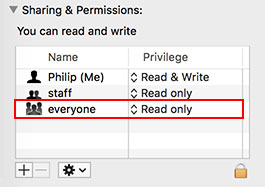
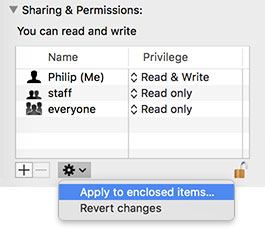

Frequently Asked Questions
How do I access Digital Locker?
Below are the instructions on how to connect to Digital Locker and create user specific folders, upload content and access them from anywhere through a web browser.
MacOS
- From the Finder menu on a Mac computer choose:
Go > Connect to Server...(⌘ + K) - In the Server Address field enter:
afp://digital-locker.design.yorku.ca - Click Connect
- Enter your username and password (the same login credentials you use to access the computers in the design labs at York)
- Select
Course_Groupsas the volume to be mounted - Double click the
1006Mw18folder - Double click your lab's folder (e.g.
lab2) - Double click your user folder (e.g.
buchananp) - Drop/copy your project files inside your own user folder
For account issues email Loris Dotto at ldotto@yorku.ca.
How do I access my project files through a web browser?
To access your projects/files through a web browser use the URL format below:
http://digital-locker.design.yorku.ca/1006Mw18/lab#/lastnamefirstinitial/path
Replace:
lab#: With your lab number (e.g.lab2).lastnamefirstinitial: With your last name and first letter of your first name (e.g.buchananp).path: The folder path to your file, including the file name and file extension (e.g. if your project 1A PDF document is in a folder namedproject-1and the file is namedproject-1a.pdfthe path would beproject-1/project-1a.pdf).
Using the examples above, the final URL would look like this:
http://digital-locker.design.yorku.ca/1006Mw18/lab2/buchananp/project-1/project-1a.pdf
Make sure that none of your file names contain spaces or special characters. Replace spaces with -.
When you enter that URL in a web browsers address bar you should see the document load.
Note: You are strongly encouraged to send your links to another student in the class to test and ensure everything loads properly before submitting to your instructor. If your links are broken or you have file permission issues (403 errors), your project will be considered late until the issues are resolved.
Common Mistakes
- Your links should not begin with
file:///. When you send the link to your instructor in Slack, it should be clickable. - Your links should not contain spaces. If they do, rename the folders and files so they do not contain spaces.
- 404 errors: This indicates your link path is not formed correctly (there may be a typo or a space character in a folder or file name). Please review the steps above and check your folder and file names carefully.
- 403 errors: This indicates there is a file permission issue. You can resolve these issues by follow the steps outlined in How do I resolve file permission issues (403 error)?.
Class Work Submission Process
All class work must be submitted using the following process.
- Upload the project components to Digital Locker (see How do I access Digital Locker? for connecting to Digital Locker).
- Create a web browser compatible link to the project components on Digital Locker (see How do I access my project files through a web browser?).
- Send the link as a direct message to your instructor with Slack.
It is recommended that you have a friend test your links from their computer to ensure they are working properly.
Work that is not sent as a link via Slack will not be accepted (e.g. work uploaded to Digital Locker but not sent to your instructor). Do not upload PDFs directly to Slack. Instead, upload them to Digital Locker and send the link to your instructor. Late submissions will be measured based on the timestamp of the Slack message containing the link to your work sent to your instructor.
Make sure to optimize your PDF file sizes so they are as small as possible.
At the end of the term, your folder on Digital Locker should have this structure:
buchananp
├── exercises
│ ├── exercise-a
│ └── exercise-b
├── ice
│ ├── ice1
│ ├── ice2
│ ├── ice3
│ ├── ice4
│ └── ice5
├── project-1
│ ├── project-1a
│ ├── project-1b
│ ├── project-1c
│ ├── project-1d
│ └── project-1e
└── project-2
├── project-2a
├── project-2b
├── project-2c
├── project-2d
└── project-2e
How do I resolve file permission issues (403 error)?
You will occasionally encounter 403 errors (file permission errors) when trying to view your projects that are stored in Digital Locker in a web browser. To resolve the file permission errors:
- From your local computer (not on Digital Locker), right click on the file/folder that is causing the issue and select Get Info (⌘ + I).
- In the file properties window, open Sharing & Permissions by clicking the grey triangle.
Set
everyonetoRead only.
If this is a folder, click the Gear icon and select Apply to enclosed items...

Delete the file/folder from Digital Locker and replace with the file/folder you just changed the permissions for.
Test the link again to ensure the file permission errors have been resolved.
Setting up Digital Locker project folders
All work for the class will be submitted via a special folder in Digital Locker. We will set this folder up on the first day of class.
When instructed to by your course instructor, follow these steps:
Connect to Digital Locker:
- From the Finder menu on a Mac computer choose:
Go > Connect to Server...(⌘ + K) - In the Server Address field enter:
afp://digital-locker.design.yorku.ca - Click Connect
- Enter your username and password (the same login credentials you use to access the computers in the design labs at York)
- From the Finder menu on a Mac computer choose:
Select
Course_Groupsas the volume to be mounted- Double click the
1006Mw18folder - Double click your lab's folder (your instructor will inform you about what lab you are in)
When instructed, create a new folder in your lab folder and use your last name and the first initial of your first name as the name of the folder
Do not use spaces, hyphens, underscores or other special characters in your folder name
For example, my name is Phil Buchanan so my folder name would be
buchananpLet your instructor know when you have completed the task